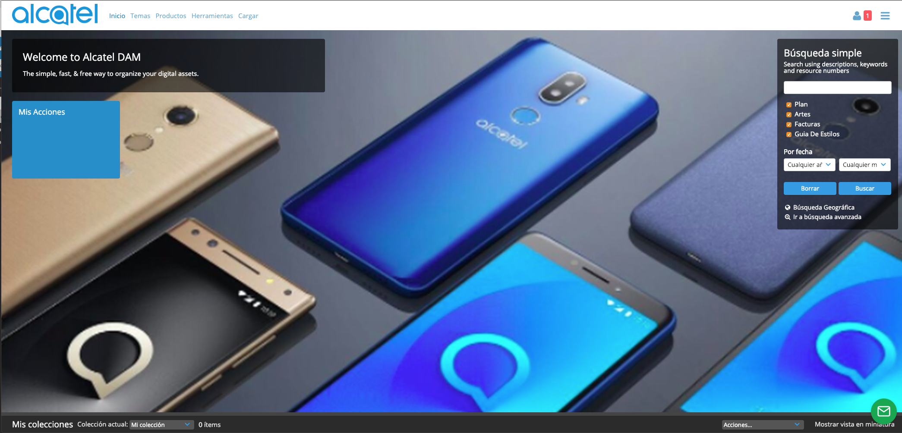
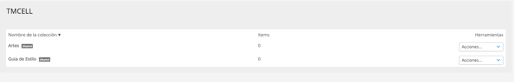
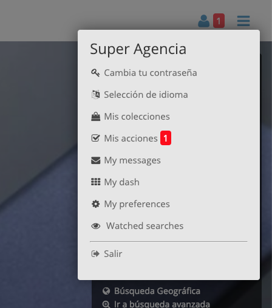
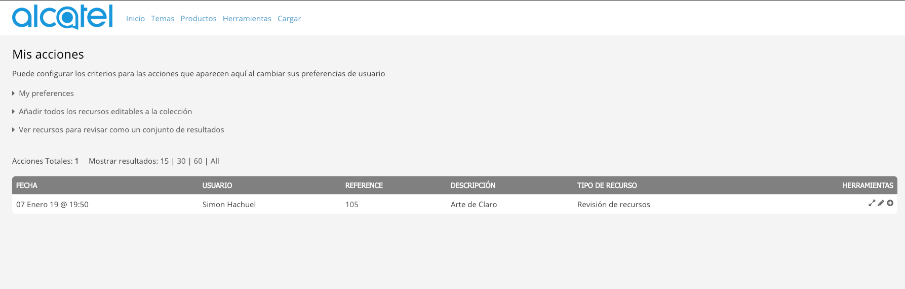
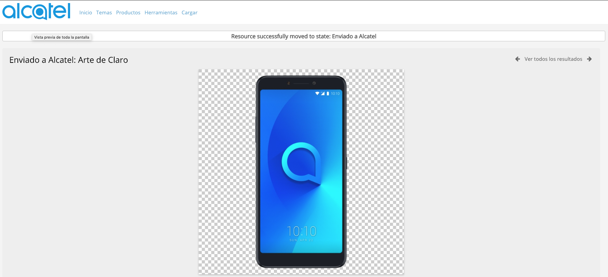

Usuario Agencia¶
Usuario Agencia.
Dashboard¶
Al ingresar como una agencia, se podra observar una carpeta con el Nombre de “Acciones”, este es un accesso directo para la opcion de “Mis Acciones” en el menu de la derecha.
Ver Contenido¶
1- Hacer click en “Temas” en el menú superior.
Revisión de Contenido¶
1- Seleccion la opcion de “Mis acciones” en el menu superior derecho.
2- En la pantalla de Mis acciones se podrán observar todas las acciones pendientes por la agencia
3- Para iniciar una revisión hay que hacer click en el siguiente icono (Flechas diagonales)

4- Luego de revisar toda la información del contenido en la seccion de “Workflow” se podra decidir si enviar el Arte a el usuario “Alcatel” o Rechazar la misma para que el usuario pueda hacer cambios al contenido.

5- Al seleccionar una opción el usuario sera redireccionado a los detalles del contenido y un mensaje en la parte superior confirmando el cambio de estado del mismo.
